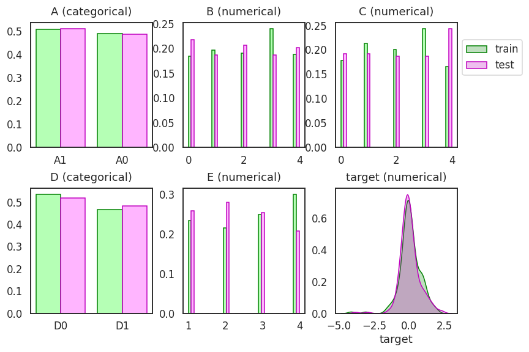
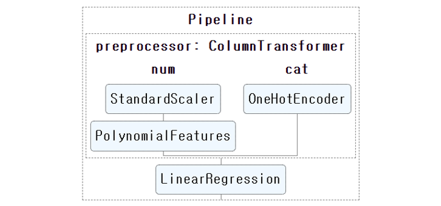
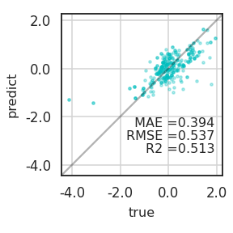
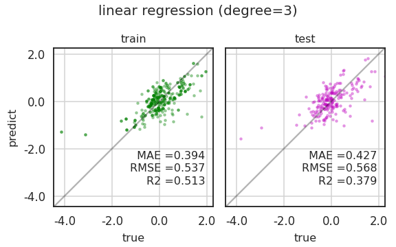
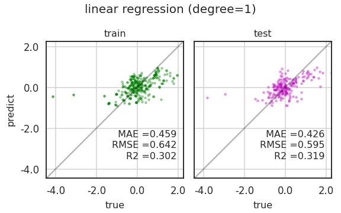
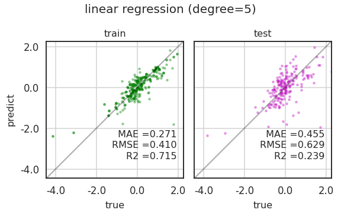
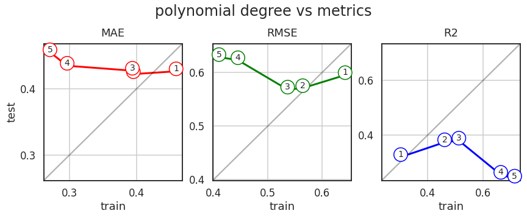
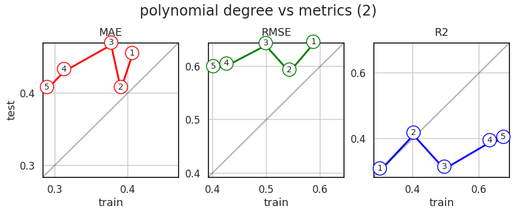
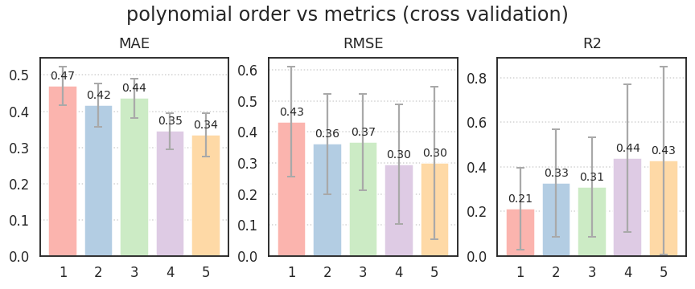
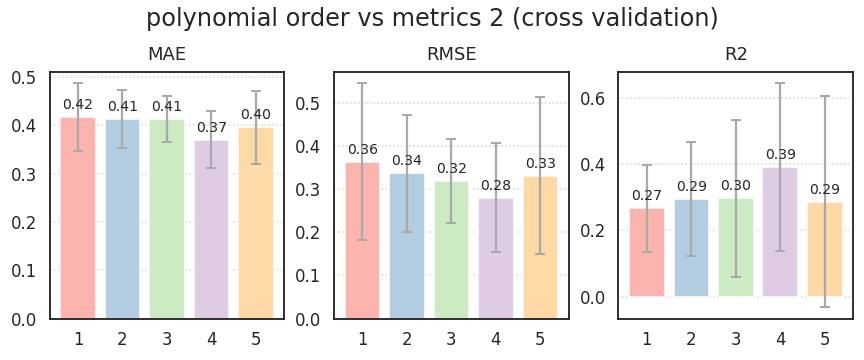

- 데이터 시각화는 머신러닝 과정을 확인하기 좋습니다.
- 하이퍼파라미터에 따라 확인할 값이 여럿 있고,
- 숫자로 확인할 수도 있지만 눈에 잘 들어오지 않아 그림으로 표현해 보았습니다.
1. 데이터 & 분석 설정
- 필요한 라이브러리들을 불러옵니다.
- 업데이트된 matplotlib 버전 3.4.1을 사용합니다.
- 새로 생긴 기능을 사용해 볼 것입니다.
1
2
3
4
5
6
7
8
9
10
11
12
13%matplotlib inline
import numpy as np
import pandas as pd
import matplotlib.pyplot as plt
import seaborn as sns
sns.set_context("talk")
sns.set_style("white")
sns.set_palette("Pastel1")
import matplotlib as mpl
mpl.__verion__ - 실행 결과 :
1
'3.4.1'
- 현업 데이터를 가져왔습니다.
- 범주형 2개, 수치형 3개, 400줄짜리 단촐한 데이터입니다.
- 수치형 변수를 맞추는 regression 문제입니다.
- train : test = 8 : 2로 분리합니다.
- 제겐 굳이 index를 뽑아서 분리하는 버릇이 있습니다.
- 여차할 때 확인해보기 좋습니다.
1
2
3
4
5
6
7
8
9
10
11
12
13df_vcv = pd.read_csv("df_vcv.csv")
train_portion = 0.8
np.random.seed(42)
idx_train = np.random.choice(X.index, size=int(X.shape[0]*train_portion))
idx_test = list(set(X.index) - set(idx_train))
X_train = X.loc[idx_train]
X_test = X.loc[idx_test]
y_train = y.loc[idx_train]
y_test = y.loc[idx_test]
2. 데이터 분포 확인
- 쪼갠 trainset, testset을 확인합니다.
- 데이터 분포를 비율로 그려서 trainset과 testset이 비슷한지 봅니다.
- train을 green, test를 magenta로 나란히 그려서 비교합니다.
코드 보기/접기
1
2
3
4
5
6
7
8
9
10
11
12
13
14
15
16
17
18
19
20
21
22
23
24
25
26
27
28
29
30
31
32
33
34
35
36
37
38
39
40
41
42
43
44
45fig, axes = plt.subplots(ncols=3, nrows=2, figsize=(12, 8))
axs = axes.ravel()
for ax, col in zip(axs, df_vcv.columns):
# X features
if col != "target":
if df_vcv[col].dtype == "O": # categorical
df_train = df_vcv.loc[idx_train, col].value_counts().reset_index()
df_test = df_vcv.loc[idx_test, col].value_counts().reset_index()
width_cat = 0.4
ax.bar(df_train.index-width_cat/2, df_train[col]/len(idx_train), width=width_cat, ec="g", fc="#AAFFAADD")
ax.bar(df_test.index+width_cat/2, df_test[col]/len(idx_test), width=width_cat, ec="m", fc="#FFAAFFDD")
ax.set_xticks(list(range(df_train.shape[0])))
ax.set_xticklabels(df_train["index"].values)
else: # numerical
bins = np.linspace(df_vcv[col].min(), df_vcv[col].max(), 20)
bins_center = (bins[:-1] + bins[1:])/2
bins_delta = bins[1] - bins[0]
counts_train, bins_train = np.histogram(df_vcv.loc[idx_train, col], bins=bins)
counts_test, bins_test = np.histogram(df_vcv.loc[idx_test, col], bins=bins)
width_num = bins_delta/2
ax.bar(bins_center-width_num/2, counts_train/len(idx_train), width=width_num, ec="g", fc="#AAFFAADD")
ax.bar(bins_center+width_num/2, counts_test/len(idx_test), width=width_num, ec="m", fc="#FFAAFFDD")
# y feature
else:
sns.kdeplot(df_vcv.loc[idx_train, col], color="g", fill=True, ax=ax, label="train")
sns.kdeplot(df_vcv.loc[idx_test, col], color="m", fill=True, ax=ax, label="test")
ax.set_ylabel("")
if col in ["A", "D"]:
coltype = "categorical"
else:
coltype = "numerical"
ax.set_title(f"{col} ({coltype})", pad=12)
handles, labels = axs[5].get_legend_handles_labels()
axs[2].legend(handles, labels, loc="upper left", bbox_to_anchor=(1,0.9))
fig.tight_layout()
fig.savefig("6_vcv_01.png")

3. Machine Learning
- 데이터 전처리와 선형회귀에 필요한 라이브러리를 불러옵니다.
1
2
3
4
5
6
7
8
9
10
11# encoder
from sklearn.preprocessing import OneHotEncoder
# machine learning models
from sklearn.preprocessing import StandardScaler
from sklearn.preprocessing import PolynomialFeatures
from sklearn.linear_model import LinearRegression
# pipeline
from sklearn.pipeline import Pipeline
from sklearn.compose import ColumnTransformer
3.1. Pipeline 구축
- scaler와 one-hot encoder 등을 수행하며 데이터가 바뀌는 과정을 바라볼 수 있습니다.
- 변환이 눈과 손에 익지 않았을 때는 유용한 방법이지만 깊이 분석하기엔 한계가 있습니다.
- 예를 들어 feature importance를 도출할 때, one-hot encoding이 수행된 범주형 인자는 원소 하나하나에 대한 중요도가 나와버려 정작 인자의 중요도를 구하기 어렵습니다.
- 체계적으로 분석할 수 있도록 pipeline을 구축합시다.
- 범주형 데이터와 수치형 데이터에 다른 전처리를 수행합니다.
- sklearn의
set_config(display='diagram')을 이용하면 그림으로 볼 수 있습니다.코드 보기/접기
1
2
3
4
5
6
7
8
9
10
11
12
13
14
15
16
17
18
19
20
21
22
23
24
25
26
27
28
29
30# linear regression model
def linear(degree):
# categorical and numerical features
cat_features = ["A", "D"]
cat_transformer = OneHotEncoder(sparse=False)
num_features = ["B", "C", "E"]
num_transformer = Pipeline(steps=[("scaler", StandardScaler()),
("polynomial", PolynomialFeatures(degree=degree,
include_bias=True))])
# preprocessor
preprocessor = ColumnTransformer(transformers=[("num", num_transformer, num_features),
("cat", cat_transformer, cat_features)
])
# modeling
model = Pipeline(steps=[("preprocessor", preprocessor),
("linear", LinearRegression())
])
return model
# pipeline output
from sklearn import set_config
set_config(display='diagram')
model = linear(3)
display(model)

set_config(display='text')를 통해 출력 모드를 바꿀 수 있습니다.1
2set_config(display='text')
model.fit(X_train, y_train)- 실행 결과
1
2
3
4
5
6
7
8
9
10
11Pipeline(steps=[('preprocessor',
ColumnTransformer(transformers=[('num',
Pipeline(steps=[('scaler',
StandardScaler()),
('polynomial',
PolynomialFeatures(degree=3))]),
['B', 'C', 'E']),
('cat',
OneHotEncoder(sparse=False),
['A', 'D'])])),
('linear', LinearRegression())])
3.2. 평가: metrics
파이프라인으로 구축한 머신러닝 모델의 성능을 평가합니다.
평가 지표로는 MAE(mean absolute error), RMSE(root mean squared error), R2(coefficient of determination)를 사용합니다.
모델과 데이터를 넣으면 예측결과와 평가지표를 뽑아주는 함수를 만듭니다.
코드 보기/접기
1
2
3
4
5
6
7
8
9
10
11
12
13
14
15
16
17
18
19
20
21
22
23
24
25
26
27
28
29
30
31
32
33
34# evaluation metrics
from sklearn.metrics import mean_absolute_error as mae_
from sklearn.metrics import mean_squared_error as mse_
from sklearn.metrics import r2_score as r2_
# 평가지표 계산 함수
def get_metrics(model, X_train, X_test, y_train, y_test):
# train
y_pred_train = model.predict(X_train)
mae_train = mae_(y_train, y_pred_train)
rmse_train = np.sqrt(mse_(y_train, y_pred_train))
r2_train = r2_(y_train, y_pred_train)
# test
y_pred_test = model.predict(X_test)
mae_test = mae_(y_test, y_pred_test)
rmse_test = mse_(y_test, y_pred_test, squared=False)
r2_test = r2_(y_test, y_pred_test)
return y_pred_train,y_pred_test, mae_train, mae_test, rmse_train, rmse_test, r2_train, r2_test
# 평가지표 도출
y_pred_train, y_pred_test, mae_train, mae_test, rmse_train, rmse_test, r2_train, r2_test = \
get_metrics(model, X_train, X_test, y_train, y_test)
# 평가지표 출력
print("# train dataset")
print(f" MAE : {mae_train:.3f}")
print(f" RMSE: {rmse_train:.3f}")
print(f" R2 : {r2_train:.3f}")
print("\n# test dataset")
print(f" MAE : {mae_test:.3f}")
print(f" RMSE: {rmse_test:.3f}")
print(f" R2 : {r2_test:.3f}")실행 결과:
1
2
3
4
5
6
7
8
9# train dataset
MAE : 0.394
RMSE: 0.537
R2 : 0.513
# test dataset
MAE : 0.427
RMSE: 0.568
R2 : 0.379
3.3. Visualization: Parity Plot
- 머신러닝 모델의 예측력은 평가 지표와 같은 수치로 도출되지만 충분하지 않습니다.
- 어떤 부분이 잘 맞고 어디가 틀린지 확인해야 보완할 수 있습니다.
- 데이터 시각화를 통해 확인해 봅시다.
- 참값과 예측값을 비교하는 방법으로 parity plot을 흔히 사용합니다.
- 참값과 예측값이 $$y = x$$에 가까울 수록 좋습니다.
- x와 y축 범위를 일치시켜 그립니다.
return ax로 axes를 받을 수 있도록 설계합니다.코드 보기/접기
1
2
3
4
5
6
7
8
9
10
11
12
13
14
15
16
17
18
19
20
21
22
23
24
25
26
27
28
29
30
31
32
33
34
35
36
37
38
39
40
41
42
43
44
45def plot_parity(true, predict, c="c", mae=None, rmse=None, r2=None, equal=False,
title=None, xlabel="true", ylabel="predict", ax=None):
# if axes not defined, create one.
if not ax:
fig, ax = plt.subplots(figsize=(4, 4))
# scatter plot
ax.scatter(true, predict, c=c, s=10, alpha=0.3)
# x, y limits
min_ = min(ax.get_xbound()[0], ax.get_ybound()[0])
max_ = max(ax.get_xbound()[1], ax.get_ybound()[1])
ax.set_xlim(min_, max_)
ax.set_ylim(min_, max_)
# x, y ticks
lb, ub = ax.get_ybound()
ticks =[x for x in ax.get_xticks() if x >= lb and x <= ub]
ax.set_xticks(ticks)
ax.set_xticklabels(ticks)
ax.set_yticks(ticks)
ax.set_yticklabels(ticks)
# grids
ax.set_aspect("equal")
ax.grid(axis="both", c="lightgray")
if equal:
ax.plot([lb, ub], [lb, ub], c="k", alpha=0.3)
# x, y labels and title
ax.set_xlabel(xlabel, fontsize=16, labelpad=8)
ax.set_ylabel(ylabel, fontsize=16, labelpad=8)
ax.set_title(title, fontsize=16, pad=8)
# metrics
ax.text(0.95, 0.3, f" MAE ={mae:0.3f}",
transform=ax.transAxes, fontsize=16, ha="right")
ax.text(0.95, 0.22, f"RMSE ={rmse:0.3f}",
transform=ax.transAxes, fontsize=16, ha="right")
ax.text(0.95, 0.14, f"R2 ={r2:0.3f}",
transform=ax.transAxes, fontsize=16, ha="right")
return ax
1 | ax = plot_parity(y_train, y_pred_train, mae=mae_train, rmse=rmse_train, r2=r2_train, equal=True) |

3.4. Visualization: Parity Plots
- train data와 test 데이터를 함께 그리려고 합니다.
- 방금 만든
plot_parity()함수를 두 번 사용합니다.코드 보기/접기
1
2
3
4
5
6
7
8
9
10
11
12
13
14
15
16
17
18
19
20
21
22
23
24
25
26
27
28
29def plot_parities(X_train, X_test, y_train, y_test, title):
# get metrics
y_pred_train, y_pred_test, mae_train, mae_test, rmse_train, rmse_test, r2_train, r2_test = \
get_metrics(model, X_train, X_test, y_train, y_test)
# figure prepartion
fig, axs = plt.subplots(ncols=2, figsize=(8, 5), sharex=True, sharey=True)
c_train, c_test = "g", "m"
axs[0] = plot_parity(y_train, y_pred_train, c_train,
mae_train, rmse_train, r2_train, title=f"train", ax=axs[0])
min0, max0 = axs[0].get_xbound()
axs[1] = plot_parity(y_test, y_pred_test, c_test,
mae_test, rmse_test, r2_test, title=f"test", ax=axs[1])
min1, max1 = axs[1].get_xbound()
# mis setting
axs[1].set_ylabel(None)
min_, max_ = min(min0, min1), max(max0, max1)
axs[1].set_xlim(min_, max_)
axs[1].set_ylim(min_, max_)
for ax in axs:
ax.plot([min_, max_], [min_, max_], "k", alpha=0.3)
fig.suptitle(title, fontsize=20, ha="center")
fig.tight_layout()
fig.savefig(f"{title}.png")
1 | plot_parities(X_train, X_test, y_train, y_test, "linear regression (degree=3)") |

- train, test 결과가 모두 마음에 들지 않습니다.
- 선형회귀 차수를 바꿔서 확인합시다.
- 먼저, 1차 함수를 시도해 봅니다.
코드 보기/접기
1
2
3
4
5
6
7model = linear(1)
model.fit(X_train, y_train)
y_pred_train, y_pred_test, mae_train, mae_test, rmse_train, rmse_test, r2_train, r2_test = \
get_metrics(model, X_train, X_test, y_train, y_test)
plot_parities(X_train, X_test, y_train, y_test, "linear regression (degree=1)")

- 역시 별로입니다.
- 이번에는 5차 함수를 시도합니다.
코드 보기/접기
1
2
3
4
5
6
7model = linear(5)
model.fit(X_train, y_train)
y_pred_train, y_pred_test, mae_train, mae_test, rmse_train, rmse_test, r2_train, r2_test = \
get_metrics(model, X_train, X_test, y_train, y_test)
plot_parities(X_train, X_test, y_train, y_test, "linear regression (degree=5)")

- 1, 3, 5차 모두 마음에 들지 않습니다.
- 차수에 대한 경향을 보면 답에 가까워질 것 같습니다.
- Grid Search를 사용하면 좋을 것 같습니다.
3.5. Grid Search: polynomial order
- sklearn에서 제공하는 GridSearchCV는 다음에 씁시다.
- 변수가 하나뿐이니 수동으로 바꾸어가면서 성능을 평가합니다.
코드 보기/접기
1
2
3
4
5
6
7
8
9
10
11
12
13
14
15
16
17
18
19
20
21
22
23
24
25
26
27
28
29
30
31
32
33
34
35
36
37
38
39
40
41
42
43
44
45
46
47
48
49
50
51
52
53
54
55
56
57
58
59
60
61def plot_metrics(X_train, X_test, y_train, y_test, title):
maes_train, maes_test = [], []
rmses_train, rmses_test = [], []
r2s_train, r2s_test = [], []
# polynomial degree
for degree in range(1, 6):
# model build
model = linear(degree)
model.fit(X_train, y_train)
# model evaluation
y_pred_train, y_pred_test, mae_train, mae_test, rmse_train, rmse_test, r2_train, r2_test = \
get_metrics(model, X_train, X_test, y_train, y_test)
# store metrics
maes_train.append(mae_train)
maes_test.append(mae_test)
rmses_train.append(rmse_train)
rmses_test.append(rmse_test)
r2s_train.append(r2_train)
r2s_test.append(r2_test)
# data visualization
fig, axs = plt.subplots(ncols=3, figsize=(12, 5))
axs[0].plot(maes_train, maes_test, "ro-", lw=3)
axs[1].plot(rmses_train, rmses_test, "go-", lw=3)
axs[2].plot(r2s_train, r2s_test, "bo-", lw=3)
# numbering: degree
for i in range(len(maes_train)):
axs[0].text(maes_train[i], maes_test[i], str(i+1), ha="center", fontsize=14,
bbox = {"boxstyle":"circle", "facecolor":"w", "edgecolor":"r"})
axs[1].text(rmses_train[i], rmses_test[i], str(i+1), ha="center", fontsize=14,
bbox = {"boxstyle":"circle", "facecolor":"w", "edgecolor":"g"})
axs[2].text(r2s_train[i], r2s_test[i], str(i+1), ha="center", fontsize=14,
bbox = {"boxstyle":"circle", "facecolor":"w", "edgecolor":"b"})
# mis
for ax, metric in zip(axs, ["MAE", "RMSE", "R2"]):
min_ = min(ax.get_xlim()[0], ax.get_ylim()[0])
max_ = max(ax.get_xlim()[1], ax.get_ylim()[1])
ax.plot([min_, max_], [min_, max_], "-k", alpha=0.3)
ax.set_xlim(min_, max_)
ax.set_ylim(min_, max_)
ax.set_title(metric, pad=12)
ax.set_xlabel("train")
ticks = [round(x,1) for x in ax.get_xticks() if x <= ax.get_xbound()[1] and x >= ax.get_xbound()[0]]
ax.set_xticks(ticks)
ax.set_xticklabels(ticks)
ax.set_yticks(ticks)
ax.set_yticklabels(ticks)
ax.grid()
axs[0].set_ylabel("test")
fig.suptitle(f"{title}", fontsize=24)
fig.tight_layout()
fig.savefig(f"{title.replace('(','_').replace(')','_')}.png")

- 가로축은 trainset, 세로축은 testset입니다.
- 차수가 거듭될수록 MAE와 RMSE, R2 모두 overfitting이 관찰됩니다.
- 1차나 2차를 고르면 되나 싶지만, 한번 더 확인합시다.
- train과 test 데이터 분할을 다시 해서 확인합니다.
- split에 사용된 numpy random seed를 교체해서 데이터를 다시 만들고 똑같이 진행합니다.
코드 보기/접기
1
2
3
4
5
6
7
8
9np.random.seed(0)
idx_train_2 = np.random.choice(X.index, size=int(X.shape[0]*train_portion))
idx_test_2 = list(set(X.index) - set(idx_train_2))
X_train_2 = X.loc[idx_train_2]
X_test_2 = X.loc[idx_test_2]
y_train_2 = y.loc[idx_train_2]
y_test_2 = y.loc[idx_test_2]
1 | plot_metrics(X_train_2, X_test_2, y_train_2, y_test_2, "polynomial degree vs metrics (2)") |

- 1차보다 2차가 $$y = x$$에 가깝습니다.
- 그런데 그게 문제가 아닐 것 같습니다. 거동이 완전히 바뀌었습니다.
- 데이터에 따른 편차가 상당히 큽니다.
3.6. Grid Search Cross Validation: polynomial order
- 그런데 하나 잊은 것이 있습니다.
- test data는 최종 검증용으로만 사용해야지, 이렇게 성능을 테스트셋에 맞추면 결국 테스트셋에 오버피팅될 뿐입니다.
- 이건 안봤다고 치고 덮어놓고, train data만 가지고 최적을 찾아봅시다.
- Grid Search + Cross Validation이 필요합니다.
- 다항식의 차수만 바꾸면서 각각의
cross validataion score를 측정합니다. cv=5로 다섯 번 수행한 교차검증의 평균과 표준편차를 구합니다.- 성능이 좋으려면 평균이 높아야 하고, 표준편차는 작아야 합니다.
- 교차검증을 신뢰하려면 적어도 표준편차라도 작아야 합니다.
- 과연 그럴지 확인합니다.
코드 보기/접기
1
2
3
4
5
6
7
8
9
10
11
12
13
14
15
16
17
18
19
20
21
22
23
24
25
26
27
28
29
30
31
32def plot_cv(X_train, y_train, title):
fig, axs = plt.subplots(ncols=3, figsize=(12, 5))
# polynomial degree
for degree in range(1, 6):
# model build
model = linear(degree)
# cross validation
for scoring, ax in zip(["neg_mean_absolute_error", "neg_mean_squared_error", "r2"], axs):
scores = cross_val_score(model, X_train, y_train, scoring=scoring, cv=10)
if scoring.startswith("neg_"):
scores = -scores
# bar plot
cvs = ax.bar(degree, scores.mean())
# bar label : bar마다 데이터값 표기
ax.bar_label(cvs, fmt="%.2f", fontsize=14, padding=5)
# error bar 표현
ax.errorbar(degree, scores.mean(), yerr=scores.std(),
ecolor="darkgray", capsize=5, capthick=2)
for title_, ax in zip(["MAE", "RMSE", "R2"], axs):
ax.set_title(title_, pad=12)
ax.grid(axis="y", c="lightgray", ls=":")
xticks = list(range(1, 6))
ax.set_xticks(xticks)
ax.set_xticklabels(xticks)
fig.suptitle(f"{title}", fontsize=24)
fig.tight_layout()
fig.savefig(f"{title.replace('(','_').replace(')','_')}.png") ax.bar()에yerr를 사용하면 굳이ax.errorbar()없이도 에러바 표현이 가능합니다.- 그러나 이 경우 모처럼 matplotlib 3.4에 처음 도입된
ax.bar_label()이 errorbar 위에 붙어 보기 힘듭니다.
- Grid Search 결과를 곧장 그려봅니다.
1
plot_cv(X_train, y_train, "polynomial order vs metrics (cross validation)")
- 바꾸었던 데이터를 적용해 봅니다.
1
plot_cv(X_train, y_train, "polynomial order vs metrics 2 (cross validation)")
- 두 경우 모두, 결과를 신뢰하기에는 RMSE와 R2의 표준편차가 너무나 큽니다.
- 특히 MAE보다 RMSE의 표준편차가 크다는 점에서 이상치의 역할이 큼을 짐작할 수 있습니다.
- 5차에서는 $$R^2 < 0$$ 마저 등장하는데, 모든 범위에서 선형 회귀가 힘을 쓰지 못합니다.
- 선형 회귀가 엉망이라는 점에서 비선형성이 매우 강하다는 추측을 할 수 있습니다.
- 다음 글에서는 비선형 회귀에 도전하겠습니다.